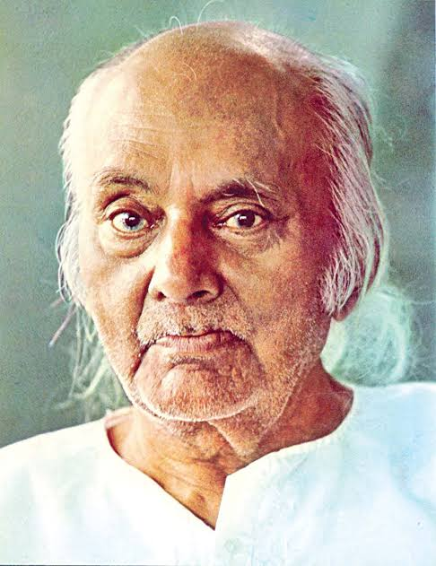

Kazi Nazrul Islam
Kazi Nazrul Islam
Rebel Poet
Nazrul had a diverse upbringing, exposed to both Islamic and Hindu cultures, which later influenced his thoughts and writings. He was a voracious reader and self-taught, mastering several languages, including Bengali, English, Persian, and Arabic. His extensive knowledge allowed him to compose poems and songs that were intellectually rich and emotionally resonant.Apart from being a poet, Nazrul was also a prolific songwriter and composer.Nazrul is celebrated as the "Rebel Poet" due to his fierce and revolutionary writings,
Awesome Writer
Nazrul's poetic works encompass various genres, including patriotic songs, ghazals, nazms (free verse), and love poems. His poetry was marked by its emotional intensity, fiery imagery, and strong symbolism. One of his notable works is "Bidrohi" (The Rebel), a revolutionary poem that became a symbol of resistance against oppression. His poetry often challenged traditional norms and advocated for a more inclusive and egalitarian society.Every year, his birthday is celebrated as "Nazrul Jayanti" in both countries, where people pay tribute to his contributions to literature, music, and social consciousness.
"Love has no meaning or amount." - Kazi Nazrul Islam
Jagatarini Gold Medal
1945
From the University of Calcutta for his work in Bengal Literature
Padma Bhushan
1960
One of the highest civilian honors of the Respublic of india
National Poet
-
Conferred the title by the Government of Bangladesh
Ekushey Padak
1976
Bangladesh's highest civilian honors
Poetry
Poems and songs